Hi, I'm Elise!
These are some of my favorite things..
Hobbies
Throughout my life, I've found several things I'm interested in doing either for fun, to progress in skill, or to pass the time.
- Roller skating:
This hobby is a social one that was introduced to me through my tias and cousins. Now, I love putting my skates on and finding a park with flat surface for me and my sister to roll and jam to music.
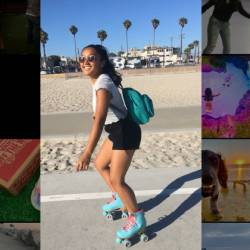
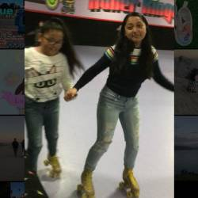
- Gaming:
This hobby was introduced to me by my significant other who helped build my pc. I like playing puzzle, adventure, and fps games. I also just bought a nintendo switch which I similarly like to play when I want to be more cozy and play more portably.
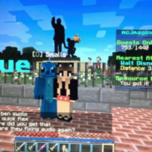
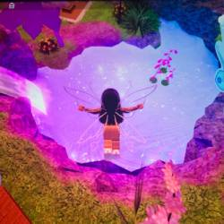
- Art:
This hobby is a lifelong one. As a young girl I always loved drawing and crafts. I would opt for these activities at school and do them at home as an only child. As I grew older I learned about digital art and painting with different mediums.
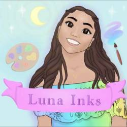
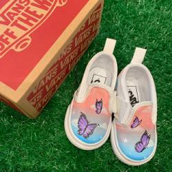
Places
- San Leandro Marina
This is one of my current favorite places to go with my family. We've made it a habit to come together outside of our busy schedules and walk our dogs at this park. As someone with separated parents, times like this are very special to me. While me, my sister, and my mom walk the dogs, My dad and brother often go to the golf course, we then all meet together.
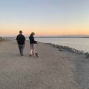
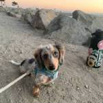
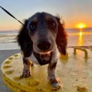
- Marin Headlands
This place is somewhere I've gone recently with my significant other. It has the most beautiful view of the Bay Area & Golden Gate Bridge. It is always a peaceful moment when I'm here.
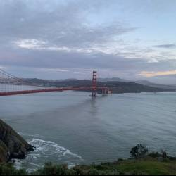
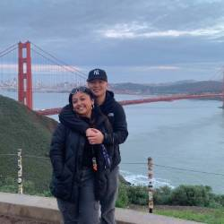
Foods
Click photos below for links to recipes!
- Noodles
- pho, hotpot, chow mein, pasta
 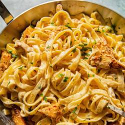
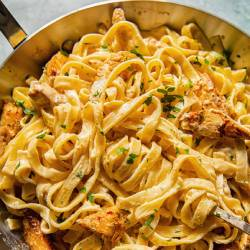
- Protein
- fried chicken, burgers, bbq ribs, steak
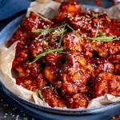
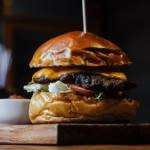
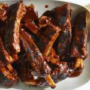